estudar décimos, centésimos e milésimos e suas representações no quadro de ordens e classes, na forma decimal e na forma fracionária;
transformar números na forma decimal em números na forma fracionária e vice-versa;
comparar números na forma decimal;
efetuar adições, subtrações, multiplicações e divisões envolvendo números na forma decimal;
verificar as regularidades nas multiplicações e divisões de um número na forma decimal por 10, 100 e 1.000 e estudar potenciação com números na forma decimal;
relacionar números na forma decimal e porcentagem.
Em algumas modalidades esportivas, a diferença de uma fração de segundo pode determinar a vitória ou a derrota de um atleta. Em esportes de velocidade, é comum vários atletas terminarem a prova com uma diferença de apenas alguns décimos ou centésimos de segundo.
No quadro a seguir, estão indicados alguns recordes olímpicos masculinos conquistados na prova dos 100 metros rasos do atletismo.
Na fotografia, da esquerda para a direita, aparecem os atletas Ryota Yamagata, Chijindu Ujah, Usain Bolt, Andre de Grasse e Kim Collins disputando a semifinal dos 100 metros rasos nos Jogos Olímpicos Rio 2016, no Rio de Janeiro.
Descrição: quadro com cinco linhas e cinco colunas.
Ano
Atleta
Nacionalidade
Recorde
Olimpíada
1988
Carl Lewis
Estados Unidos
Seul
1996
Donovan Bailey
Canadá
Atlanta
2008
Usain Bolt
Jamaica
Beijing
2012
Usain Bolt
Jamaica
Londres
Página 190
Trilha
44
Décimo
A Ásia é o continente mais populoso do mundo, com cerca de da população mundial.
Para representar , vamos construir uma figura correspondente a um inteiro.
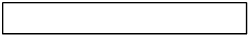
Em seguida, dividimos o inteiro em 10 partes iguais e consideramos 6 delas.
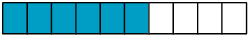
Cada uma das partes consideradas, que estão coloridas de azul na figura, representa dela ou o número na forma decimal 0,1 (1 décimo). Assim, a parte colorida de azul representa a fração decimal ou o número na forma decimal 0,6 (6 décimos).
Tomando outro exemplo, podemos representar o número na forma decimal 3,4 (lê-se 3 inteiros e 4 décimos) por meio de figuras usando o seguinte procedimento.
Construímos quatro figuras com as mesmas dimensões, cada uma correspondente a um inteiro, sendo uma delas dividida em 10 partes iguais. Depois, colorimos de azul três figuras inteiras e 4 partes daquela que está dividida.
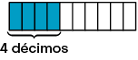
O número 3,4 também pode ser representado por uma fração decimal ou por um número na forma mista.
Fração decimal:
Número na forma mista: 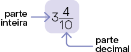
Na imagem, temos a representação desse número na reta numérica.
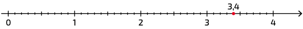
Trilha
45
Centésimo
A gasolina comum, utilizada pelos veículos no Brasil, é composta por uma mistura de gasolina pura com cerca de de etanol anidro combustível (EAC).
Para representar , vamos construir uma figura correspondente a um inteiro.
1º. 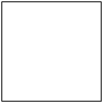
Em seguida, dividimos o inteiro em 100 partes iguais e consideramos 27 delas.
2º. 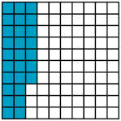
Cada uma das partes consideradas, que estão coloridas de azul na figura, representa da figura ou o número na forma decimal 0,01 (1 centésimo). Assim, a parte colorida de azul representa a fração decimal ou o número na forma decimal 0,27 (27 centésimos).
Qual fração decimal representa o número 0,71?
Página 191
Trilha
46
Milésimo
O diâmetro de um glóbulo vermelho que compõe o nosso sangue mede, aproximadamente, .
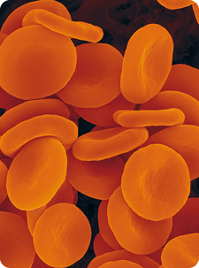 Glóbulos vermelhos (aumento aproximado de 2.160 vezes). Imagem em cores-fantasia.
Para representar , vamos construir uma figura correspondente a um inteiro
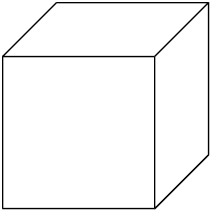
Em seguida, dividimos o inteiro em 1.000 partes iguais e consideramos 7 delas.
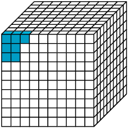
Cada uma das partes consideradas, que estão coloridas de azul na figura, representa da figura ou o número na forma decimal 0,001 (1 milésimo). Assim, a parte colorida de azul representa a fração decimal ou o número na forma decimal 0,007 (7 milésimos).
Trilha
47
Décimos, centésimos e milésimos no quadro de ordens e classes
Na unidade 2, estudamos como representar números naturais no quadro de ordens e classes. Agora, vamos representar alguns números na forma decimal nesse quadro.
601,2
23,15
4,023
Descrição: quadro com seis linhas e sete colunas.
Quadro de ordens e classes
Parte inteira
Parte decimal
Centena
C
Dezena
D
Unidade
U
Décimo
d
Centésimo
c
Milésimo
m
6
0
1
,
2
2
3
,
1
5
4
,
0
2
3
A vírgula separa a parte inteira da parte decimal.
Note como pode ser feita a leitura dos números apresentados.
601,2: seiscentos e um inteiros e dois décimos ou seiscentos e um vírgula dois.
23,15: vinte e três inteiros e quinze centésimos ou vinte e três vírgula quinze.
4,023: quatro inteiros e vinte e três milésimos ou quatro vírgula zero vinte e três.
Escreva em seu caderno a leitura do número 2,009.
Página 192
Atividades
1. As figuras de cada item foram construídas com quadradinhos de mesmas dimensões. Considerando cada figura como um inteiro, escreva em seu caderno uma fração decimal e um número na forma decimal correspondentes à parte das figuras colorida de cada cor.
a) 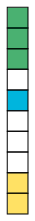
b) 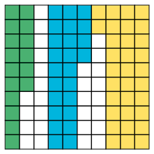
c) 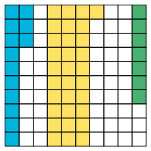
2. Em seu caderno, escreva por extenso os números na forma decimal representados no quadro de ordens.
3. A envergadura de uma ave é a medida da distância máxima entre as extremidades das asas quando abertas. No quadro ao lado, estão as medidas de distância da envergadura de algumas aves.
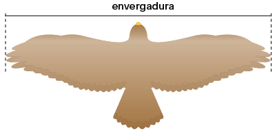
Descrição: quadro com cinco linhas e duas colunas.
Ave
Envergadura
Urubu-rei
Anhuma
Pelicano-pardo
Albatroz-de-nariz-amarelo
a) Em seu caderno, escreva o número na forma decimal que representa a medida da envergadura, em metro, de cada ave.
b) Entre as aves apresentadas, qual tem a maior envergadura? E qual tem a menor envergadura?
c) Associe o número que representa a envergadura de cada ave a um ponto destacado na reta numérica a seguir.
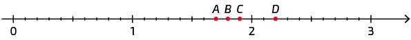
4. Escreva no caderno um número na forma decimal correspondente a cada fração a seguir. Depois, indique quais das frações convertidas estavam na forma decimal.
a)
b)
c)
d)
e)
Página 193
5. Com uma régua, Roberto verificou que o comprimento do segmento de reta a seguir mede mais , ou seja, .
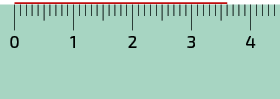
Lembre-se de que corresponde a , ou seja, .
Meça os comprimentos dos segmentos de reta com uma régua e escreva em seu caderno a medida, em centímetro, de cada um deles.
a)
b)
c)
6. No número 5,32, o algarismo 5 tem valor relativo 5, o 3 tem valor relativo 0,3 e o 2, valor relativo 0,02. Considerando essas informações, resolva os itens a seguir.
a)Escreva em seu caderno o valor relativo de cada algarismo do número 28,375.
b) Em qual dos números a seguir o algarismo 6 tem valor relativo 0,06?
6,01
0,601
0,16
0,106
7. Em seu caderno, escreva de duas maneiras diferentes de ler cada número na forma decimal indicado a seguir.
a) 1,253
b) 0,96
c) 100,2
d) 6,093
8. Analise como Manuela decompôs o número 32,581.
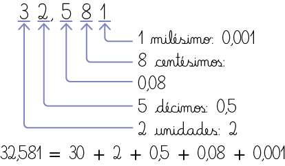
Assim como Manuela, decomponha os seguintes números na forma decimal.
a) 0,824
b) 9,417
c) 67,983
d) 130,456
9. Desde 1994, o Real é a unidade monetária em vigor no nosso país. No sistema monetário brasileiro, 1 real corresponde a 100 centavos, ou seja, 1 centavo de real equivale a 0,01 real.
Escreva em seu caderno a fração decimal e o número na forma decimal correspondentes às quantias apresentadas em cada item.
As imagens não estão representadas em proporção.
a) 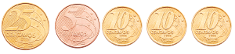b) 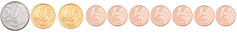c) 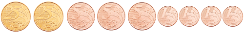d) 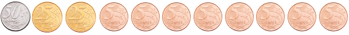
Página 194
Trilha
48
Números na forma decimal e na forma fracionária
Transformação de número na forma decimal em número na forma fracionária
Acompanhe como Cíntia fez para escrever os números na forma decimal 0,14 e 3,7 usando a forma fracionária.
No item a, a fração é equivalente a , pois . Já no item b, a fração é equivalente a 3, pois .
Transformação de número na forma fracionária em número na forma decimal
Para escrever as frações , e usando números na forma decimal, Sílvia obteve, inicialmente, a fração decimal equivalente a cada uma delas.
Algumas frações podem ser escritas de maneira equivalente com denominador 10, ou seja, na forma de fração decimal.
Os números que podem ser escritos na forma fracionária, com numerador e denominador sendo números inteiros, são chamados números racionais.
Qual é o número na forma decimal equivalente à fração ?
Em uma reta numérica, podemos representar os números racionais, tanto na forma fracionária como na forma decimal. Analise os números do exemplo acima representados em uma reta numérica.
Independentemente da maneira de representação do número racional, sua posição na reta numérica será a mesma, pois é referente ao mesmo número.
Página 195
Trilha
49
Comparação de números na forma decimal
Os cubos a seguir têm as mesmas dimensões. O cubo A foi dividido em 10 partes iguais, o cubo B, em 100 partes iguais, e o C, em 1.000 partes iguais. No cubo A, 3 partes estão em azul, no B, 30 partes, e no C, 300 partes.
A. 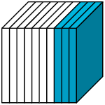
B. 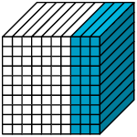
C. 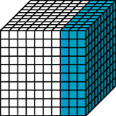
A parte colorida de azul em cada cubo representa a mesma parte do todo. Nesse caso, dizemos que os números na forma decimal 0,3, 0,30 e 0,300 são equivalentes, isto é:
O valor do número na forma decimal não se altera quando acrescentamos zeros à sua direita.
Para comparar números na forma decimal, precisamos inicialmente comparar a parte inteira.
Ao comparar os números 7,25 e 6,985, verificamos que a parte inteira de 7,25 é maior do que a parte inteira de 6,985, ou seja, .
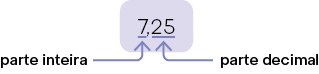 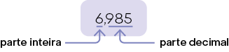
Assim, .
Caso as partes inteiras dos números que estão sendo comparados sejam iguais, devemos comparar suas partes decimais. Para isso, comparamos inicialmente os décimos, depois os centésimos, os milésimos, e assim por diante, como os seguintes exemplos.
14,36 e 14,507
As partes inteiras são iguais. Comparando os décimos, verificamos que . Assim, .
9,158 e 9,126
As partes inteiras e os décimos são iguais. Comparando os centésimos, verificamos que . Assim, .
23,456 e 23,457
As partes inteiras, os décimos e os centésimos são iguais. Comparando os milésimos, verificamos que . Assim, .
Fica a dica
Aventura decimal, de Luzia Faraco Ramos. Editora Ática, 2019. (Coleção A Descoberta da Matemática).
Por meio de uma história interessante e cheia de aventuras, esse livro traz conceitos matemáticos relacionados a frações decimais, números na forma decimal e operações. Nessa história, Paulo precisa usar seus conhecimentos matemáticos para se livrar dos perigos da Terra do Povo Pequeno.
Página 196
Escreva em seu caderno dois números diferentes na forma decimal, mas com as partes inteiras, os décimos e os milésimos iguais. Qual foi o maior número que você escreveu? E o menor?
Atividades
10. Escreva em seu caderno uma fração na forma decimal correspondente a cada número indicado a seguir. Depois, simplifique cada fração escrita até torná-la irredutível.
a) 0,14
b) 0,475
c) 5,75
d) 682,5
e) 25,64
11. Para cada item, escreva no caderno um número na forma decimal e uma fração decimal equivalentes ao número indicado.
I. quarenta e três centésimos
II. seis inteiros e trinta e cinco centésimos
III. setecentos e noventa e oito milésimos
IV. dois inteiros e oitenta e um milésimos
Agora, relacione o número indicado em cada item a um ponto da reta numérica.
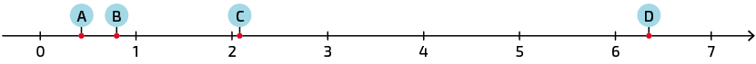
12. Uma tonelada equivale a , ou seja, . Sendo assim, cada quilograma equivale a 1 milésimo de tonelada e podemos escrever, por exemplo, da seguinte maneira.
Em seu caderno, copie os itens a seguir substituindo cada letra em destaque pelo número correspondente.
I)
II)
III)
IV)
13. Cada recipiente tem medida de capacidade de e as marcações são igualmente espaçadas. Escreva em seu caderno o número na forma decimal correspondente à quantidade de líquido, em litro, contida em cada recipiente.
a)
b)
c)
14. Associe os números equivalentes. Para isso, escreva em seu caderno a letra e o símbolo romano correspondentes.
a) 7
b) 0,7
c) 0,07
d) 0,007
I) 0,070
II) 0,700
III) 0,0070
IV) 7,000
Página 197
15. Em seu caderno, obtenha uma fração decimal equivalente a cada fração apresentada.
a)
b)
c)
d)
Utilizando algarismos e por extenso, escreva em seu caderno o número na forma decimal correspondente a cada fração decimal obtida. Em seguida, associe o número representado em cada item a um ponto destacado na reta numérica.
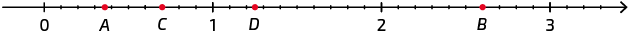
16. Estudos recentes vêm mostrando que o consumo moderado de café pode trazer benefícios à saúde, como a redução do colesterol e o auxílio ao emagrecimento. Por outro lado, quando consumido em excesso, o café pode causar problemas estomacais e dependência. Analise as informações do gráfico e responda às questões.
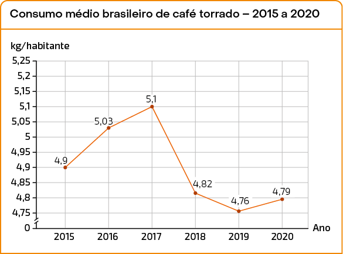
Fonte dos dados: ABIC – Associação Brasileira da Indústria de Café. Estatísticas. Disponível em: https://tedit.net/d9LTkp. Acesso em: 19 mar. 2022.
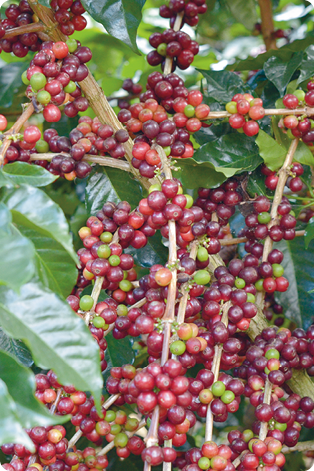 Cafeeiro com frutos.
a) Quantos quilogramas de café torrado cada brasileiro consumiu, em média, no ano de 2018?
b) Considerando as informações apresentadas, em que ano houve o maior consumo per capita de café torrado no Brasil? E o menor consumo?
O consumo per capita corresponde ao consumo médio de cada indivíduo. No caso apresentado, essetermo expressa o consumo médio anual de café dos brasileiros, ou seja, o total consumido dividido pela quantidade de brasileiros.
17. Em seu caderno, copie os itens a seguir substituindo cada pelo símbolo ou .
a) 3,718 3,809
b) 17,850 17,805
c) 0,967 0,708
d) 5,047 5,029
e) 9,685 8,521
f) 1,260 1,264
18. Escreva em seu caderno três números na forma decimal compreendidos entre os números indicados em cada item.
a) 3 e 4
b) 0,6 e 0,7
c)2,03 e 2,04
d) 5,129 e 5,133
e) 6,51 e 6,519
f) 8 e 8,144
Página 198
19. Utilizando uma única vez a vírgula e os algarismos 7, 0, 5 e 2, escreva em seu caderno:
a) o menor número possível.
b) um número maior do que 78.
c) um número entre 5,711 e 5,837.
20. Os números apresentados a seguir estão em ordem crescente e cada letra representa um algarismo. Escreva em seu caderno o algarismo correspondente a cada letra.
21. Ao comprar um produto ou um serviço, é importante exigir a nota fiscal. Isso nos garante diversos direitos. Além disso, é por meio da nota que o governo arrecada vários tributos. A partir de 2015, tornou-se obrigatório constar na nota fiscal o valor aproximado dos tributos que incidem em cada compra de mercadoria ou serviço. Com isso, o consumidor pode verificar quanto está pagando de tributos em cada compra realizada.
a) Você considera importante pedir a nota fiscal ao realizar uma compra? Justifique sua resposta.
b) Dos preços dos produtos apresentados, qual deles é o maior? E qual é o menor?
c) Qual produto custa mais do que R$ 16,50 e menos do que R$ 17,00?
d) Quais produtos seria possível comprar com o valor aproximado cobrado pelos tributos?
e)Traga para a sala de aula uma nota fiscal. Em seu caderno, elabore duas questões referentes a ela e peça a um colega que as resolva. Depois, confira se as respostas apresentadas estão corretas.
Página 199
Trilha
50
Adição e subtração
Tatiana foi a uma lanchonete e pediu, do cardápio representado a seguir, um sanduíche de atum e um suco.
Como você faria para determinar quantos reais Tatiana gastou na lanchonete?
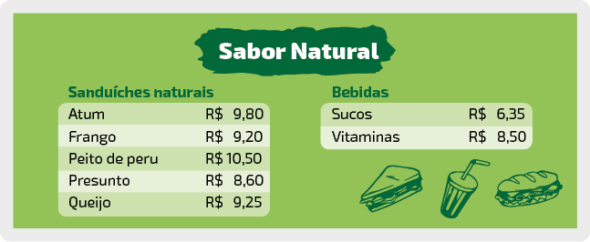
Podemos calcular quantos reais Tatiana gastou adicionando os preços do sanduíche de atum e do suco, ou seja, efetuando .
Esse cálculo pode ser feito de duas maneiras. Uma delas é usando frações decimais.
, ou seja, R$ 16,15.
Outra maneira é usar um algoritmo com os números decimais em conta montada. Para isso, posicionamos um número embaixo do outro, de modo que uma vírgula fique embaixo da outra. Em seguida, adicionamos milésimos com milésimos, centésimos com centésimos, décimos com décimos, unidades com unidades, e assim por diante.
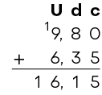
Portanto, Tatiana gastou R$ 16,15 na lanchonete.
Ainda analisando o cardápio da lanchonete, podemos calcular quantos reais o sanduíche de queijo custa a mais que o de presunto. Para isso, subtraímos o preço do sanduíche de presunto (que é menor) do preço do sanduíche de queijo (que é maior), ou seja, calcular .
Esse cálculo também pode ser realizado de duas maneiras.
, ou seja, R$ 0,65.
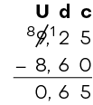
Como 6 é maior do que 2, trocamos uma unidade por 10 décimos, totalizando 12 décimos. Desse modo, subtraímos 6 décimos de 12 décimos.
Portanto, o sanduíche de queijo custa R$ 0,65 a mais que o de presunto.
Página 200
Em alguns casos, os termos de adições ou subtrações com números na forma decimal podem ter quantidades diferentes de casas decimais. Quando isso ocorre, precisamos igualar a quantidade de casas decimais dos números completando com zeros à direita, sem risco de alterá-los. Acompanhe os exemplos a seguir.
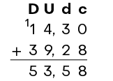
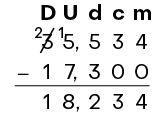
Que número deve ser adicionado a 22,141 para obter 32,67?
Atividades
22. De acordo com o cardápio apresentado na página anterior, responda às questões.
a)Quantos reais custam juntos um sanduíche de atum e uma vitamina?
b) Qual é a menor quantia que uma pessoa pode gastar comprando um sanduíche e uma bebida?
c) Sabendo que uma pessoa consumiu um sanduíche de peito de peru e um suco, pagando a despesa com uma cédula de R$ 20,00, quantos reais ela recebeu de troco?
23. Efetue os cálculos em seu caderno.
a)
b)
c)
d)
24. Nas páginas de abertura desta unidade, foram mencionados recordes olímpicos de alguns atletas na prova dos 100 metros rasos do atletismo a partir de 1988.
Descrição: quadro com cinco linhas e cinco colunas.
Ano
Atleta
Nacionalidade
Recorde
Olimpíada
1988
Carl Lewis
Estados Unidos
Seul
1996
Donovan Bailey
Canadá
Atlanta
2008
Usain Bolt
Jamaica
Beijing
2012
Usain Bolt
Jamaica
Londres
a) De acordo com os recordes apresentados, calcule a diferença de tempo entre:
Carl Lewis (1988) e Donovan Bailey (1996).
Donovan Bailey (1996) e Usain Bolt (2008).
b) Em quantos centésimos de segundo foi baixado o recorde desde Carl Lewis, em 1988, até Usain Bolt, em 2012?
25. Calcule a medida do perímetro de cada polígono.
a) 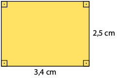
b) 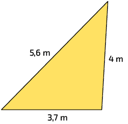
26. Resolva as questões a seguir.
a) Pedro pagou a fatura de água no valor de R$ 87,36 com uma cédula de R$ 100,00. Quantos reais ele recebeu de troco?
b) Joana mede de altura a mais que sua filha. Qual é a medida da altura de Joana, sabendo que sua filha mede ?
c) Tiago tem R$ 36,40. Sabendo que Maria tem R$ 14,25 a menos que Tiago, quantos reais os dois têm juntos?
27. Em cada item a seguir, a diferença entre dois termos consecutivos da sequência é sempre a mesma. Sabendo disso, junte-se a um colega, descubram a regra de cada sequência e escrevam no caderno os próximos 5 números de cada uma delas.
a)
b)
c)
Página 201
28. Podemos calcular utilizando uma calculadora.
I) Com a calculadora ligada, inserimos o número 7,593 digitando as teclas:
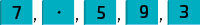
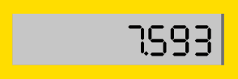
II) Digitamos a tecla e inserimos o número 3,86 digitando as teclas:
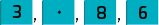
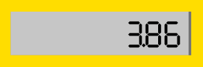
III) Digitamos a tecla 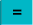 e obtemos o resultado.
Com uma calculadora, efetue os cálculos a seguir e registre os resultados em seu caderno.
a)
b)
c)
d)
e)
f)
29. Analise a mesma balança em três momentos.
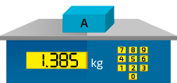 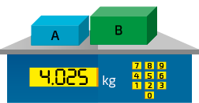 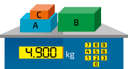
Utilizando uma calculadora, determine, em quilograma, a medida da massa total das caixas apresentadas em cada item.
I)
II)
III)
IV)
30.A expectativa de vida indica quantos anos, em média, vivem as pessoas de certa população. Em um país, quanto melhores forem as condições de saúde, saneamento, entre outros fatores de qualidade de vida, maior é essa expectativa para seus habitantes. Analise o gráfico.
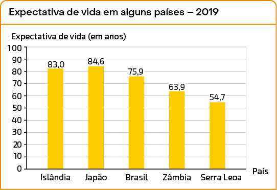
Fonte dos dados: IBGE. Países. Disponível em: https://tedit.net/fWYbfr. Acesso em: 21 mar. 2022.
a)Entre os países indicados no gráfico, qual tinha a maior expectativa de vida em 2019? E a menor?
b) Qual era a diferença, em anos, da expectativa de vida em 2019 entre:
islandeses e brasileiros?
japoneses e serra-leoneses?
c) Em 2019, a expectativa de vida no Chile era 25,5 anos a mais que a expectativa de vida em Serra Leoa. Qual era, em 2019, a expectativa de vida no Chile?
Página 202
31. Nas imagens a seguir, estão indicadas as quantidades de líquido contidas nos recipientes A, B e C, representadas em litro. Sabendo que o recipiente D não contém líquido e que a medida de sua capacidade é , elabore duas questões referentes a essas imagens e dê para um colega resolver. Ao final, confira se as respostas dele estão corretas.
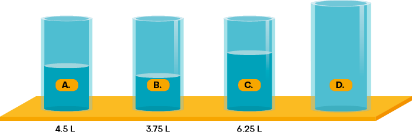
32. Use uma calculadora para determinar nos esquemas o número correspondente a cada letra.
I)
II)
33. Verifique o preço de cada produto que Bruno deseja comprar em uma papelaria.
As imagens não estão representadas em proporção.
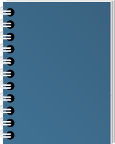
R$ 18,35
R$ 9,79
R$ 12,37
R$ 11,67
Bruno calculou mentalmente quanto gastaria na compra de um caderno e um estojo para saber se tinha dinheiro suficiente. Nesse caso, ele arredondou o preço de cada produto à unidade do real mais próxima, verificando que 18,35 está mais próximo de 18 do que de 19; 11,67 está mais próximo de 12 do que de 11; e assim por diante. Em seguida, realizou o cálculo.
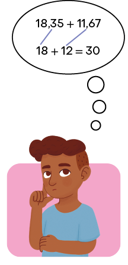
a) Você considera o procedimento realizado por Bruno útil para a situação apresentada? Justifique sua resposta.
b) Calcule mentalmente o gasto aproximado de Bruno se ele comprar:
I) um caderno e uma lapiseira.
II) um estojo e uma caixa de lápis de cor.
III) uma lapiseira e uma caixa de lápis de cor.
IV) um caderno, um estojo e uma lapiseira.
c) Realize os cálculos exatos e compare os resultados obtidos com os valores aproximados do item anterior.
d) Cite outras situações em que é útil o cálculo aproximado.
Página 203
Trilha
51
Multiplicação de um número na forma decimal por 10, 100 e 1.000
Usando uma calculadora, Mariana efetuou os cálculos a seguir.
Nos resultados dos cálculos efetuados, Mariana percebeu que a vírgula assumia posições diferentes, dependendo da potência de 10 (10, 100, 1.000, ...) utilizada como fator.
De modo geral, ao multiplicarmos por 10, milésimos são transformados em centésimos, centésimos em décimos, e assim por diante. Por esse motivo, de maneira simplificada, podemos dizer que, multiplicando um número na forma decimal por:
10, a vírgula desloca-se uma casa para a direita.
100, a vírgula desloca-se duas casas para a direita.
1.000, a vírgula desloca-se três casas para a direita.
Analise as informações e os cálculos apresentados. Que regularidade você pode perceber entre a vírgula e os fatores terminados em zero usados nessas multiplicações?
Trilha
52
Divisão de um número na forma decimal por 10, 100 e 1.000
Utilizando uma calculadora, Aline efetuou os cálculos a seguir.
Nos resultados dos cálculos efetuados, Aline percebeu que a vírgula assumia posições diferentes, dependendo da potência de 10 (10, 100, 1.000, ...) utilizada como divisor.
De modo geral, ao dividirmos por 10, décimos são transformados em centésimos, centésimos em milésimos, e assim por diante. Por esse motivo, de maneira simplificada, podemos dizer que, dividindo um número na forma decimal por:
10, a vírgula desloca-se uma casa para a esquerda.
100, a vírgula desloca-se duas casas para a esquerda.
1.000, a vírgula desloca-se três casas para a esquerda.
Analise as informações e os cálculos apresentados. Que regularidade você pode perceber entre a vírgula e os divisores terminados em zero usados nessas divisões?
Página 204
Atividades
34. Sabendo que e , faça a conversão adequada e escreva em seu caderno a medida, em centímetro, indicada em cada item.
As imagens não estão representadas em proporção.
a) 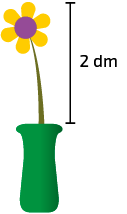
b)
c)
d)
35. Resolva as multiplicações sem efetuar cálculos por escrito.
a)
b)
c)
d)
e)
f)
36. Verifique algumas ofertas anunciadas por uma loja.
Caneta esferográfica R$ 0,79 a unidade.
Calculadora R$ 9,90 a unidade.
Calcule quantos reais custa:
a) uma caixa de canetas esferográficas.
b) uma caixa de calculadoras.
37. Algumas pessoas costumam imprimir suas fotografias para compor álbuns físicos. Leia no cartaz uma promoção de impressões em uma loja.
a) Nessa loja, quanto uma pessoa pagaria na impressão de:
10 fotografias?
100 fotografias?
b) Mônica imprimiu nessa loja 20 fotografias e pagou com uma cédula de R$ 50,00. Quantos reais ela recebeu de troco?
38. Efetue os cálculos.
a)
b)
c)
d)
e)
f)
39. Uma companhia telefônica vai instalar, entre os 2 postes indicados na figura, outros 9 postes, de tal modo que ficarão todos alinhados e igualmente espaçados. Qual será a medida da distância, em metros, entre 2 postes consecutivos?
As imagens não estão representadas em proporção.
40. Antônio vende cocos em uma barraca na praia. Sabendo que ele comprou 100 cocos por R$ 225,00 e vendeu cada coco por R$ 6,50, responda às questões a seguir.
a) Quantos reais custou cada coco comprado por Antônio?
b)Qual foi o lucro obtido por Antônio na venda de cada coco?
Considere que lucro é a diferença entre o preço de venda e o preço de compra.
Página 205
41. Determine o número correspondente a cada letra do esquema.
42. Associe os itens que apresentam os cálculos de mesmo resultado. Para isso, escreva em seu caderno a letra e o símbolo romano correspondentes.
a)
b)
c)
d)
I)
II)
III)
IV)
Trilha
53
Multiplicação de um número natural por um número na forma decimal
Os preços por litro dos combustíveis de certo posto estão apresentados na placa.
Se uma pessoa abastecer sua motocicleta nesse posto com de gasolina, quantos reais ela vai pagar?
Para responder a essa pergunta, precisamos efetuar o cálculo .
Verifique como podemos realizar esse cálculo de maneiras diferentes.
1ª maneira
2ª maneira
3ª maneira
Além das apresentadas, podemos realizar esse cálculo da seguinte maneira.
Multiplicamos 6,55 por 100 e obtemos 655, ou seja, um número natural (sem vírgula). Em seguida, efetuamos .
Como a divisão é a operação inversa da multiplicação, dividimos o resultado obtido por 100 para compensar a multiplicação .
Portanto, a pessoa vai pagar R$ 19,65 por de gasolina.
Página 206
De maneira prática, ao multiplicarmos um número natural por um número na forma decimal, desconsideramos a vírgula do fator decimal e efetuamos o cálculo. Depois, acrescentamos a vírgula ao resultado de modo que ele fique com a mesma quantidade de casas decimais do fator decimal.
De acordo com a página anterior, quantos reais uma pessoa vai pagar para abastecer seu veículo com:
de etanol?
de diesel?
Atividades
43. Calcule a medida do perímetro dos seguintes polígonos regulares.
a)
b)
c)
44. Na imagem a seguir, está representada a quantia que Carlos coloca diariamente em um cofrinho. Calcule quantos reais ele terá no cofrinho após:
Para resolver os itens b e c desta atividade, considere um mês com 30 dias e, para resolver o item d, um ano com 365 dias.
a) uma semana.
b)um mês.
c) um bimestre.
d) um ano.
45. Acompanhe o procedimento para calcular utilizando uma calculadora.
I) Com a calculadora ligada, inserimos o número 23 digitando as teclas e e, depois, digitamos a tecla .
II) Inserimos o número 8,63, digitando as teclas:
III) Por fim, digitamos a tecla e obtemos o resultado.
Utilizando uma calculadora, efetue os cálculos a seguir e registre os resultados no caderno.
a)
b)
c)
d)
e)
f)
46. Sabendo que , resolva os itens sem efetuar cálculos por escrito.
a)
b)
c)
d)
Página 207
47. A Stock Car é uma das principais categorias do automobilismo brasileiro. Em alguns circuitos, os carros dessa categoria chegam a atingir a velocidade de .
A seguir, estão representados alguns circuitos onde foram realizadas as corridas da Stock Car em 2021 e a quantidade de voltas percorridas pelo primeiro colocado em cada uma delas.
Etapa 2 – Autódromo José Carlos Pace (Interlagos) – São Paulo
quantidade de voltas do 1º colocado: 19
medida da distância de cada volta:
Etapa 5 – Autódromo Internacional Zilmar Beux – Cascavel, Paraná
quantidade de voltas do 1º colocado: 28
medida da distância de cada volta:
Etapa 11 – Autódromo Internacional de Santa Cruz do Sul – Santa Cruz do Sul, Rio Grande do Sul
quantidade de voltas do 1º colocado: 22
medida da distância de cada volta:
a) Em qual dos circuitos a medida da distância percorrida em cada volta é maior? E em qual é menor?
b)Utilizando uma calculadora, determine quantos quilômetros o primeiro colocado percorreu em cada etapa da Stock Car.
48. Resolva as expressões dos itens a seguir.
a)
b)
c)
d)
49. Em um supermercado, Daniele comprou 5 caixinhas de leite e 8 sabonetes, conforme os preços indicados.
R$ 3,99
R$ 2,49
a)Sem realizar cálculos por escrito, faça uma estimativa do total gasto por Daniele nessa compra. Com R$ 40,00 é possível pagar a compra?
b) Sabendo que Daniele pagou o supermercado com uma cédula de R$ 50,00, copie a expressão numérica correspondente ao troco que ela recebeu. Em seguida, resolva a expressão que você copiou.
I)
II)
III)
50. Nos itens a seguir, arredonde o fator decimal à unidade mais próxima e faça o cálculo aproximado.
a)
b)
c)
d)
Agora, efetue os cálculos exatos em seu caderno e compare os resultados obtidos.
Página 208
Trilha
54
Multiplicação de um número na forma decimal por outro número na forma decimal
Juliana comprou do tecido representado a seguir.
R$ 19,95 o metro
Para saber quanto Juliana vai pagar pelo tecido, podemos efetuar o cálculo da seguinte maneira.
Multiplicamos 5,4 por 10 e 19,95 por 100 e obtemos dois números naturais (sem vírgula). Em seguida, efetuamos .
Como a divisão é a operação inversa da multiplicação, dividimos o resultado obtido por , isto é, por 1.000, para compensar as multiplicações e .
Portanto, Juliana vai pagar R$ 107,73 pelo tecido.
De maneira prática, ao multiplicarmos números na forma decimal, desconsideramos a vírgula dos fatores e efetuamos o cálculo. Depois, acrescentamos a vírgula ao resultado de maneira que a quantidade de casas decimais seja igual à soma das quantidades de casas decimais dos fatores.
Quantos reais Juliana pagaria caso comprasse do mesmo tecido?
Atividades
51. Efetue os cálculos no caderno.
a)
b)
c)
d)
Página 209
52. Marta foi à feira e comprou alguns produtos conforme as quantidades indicadas nas balanças.
arrozfeijãotomates
Utilize uma calculadora para efetuar os cálculos e responda às questões.
a) Quantos reais Marta pagou ao comprar cada um desses produtos?
b) Qual foi a quantia total que Marta gastou?
53. Analise as despesas que Marcelo teve com transporte em uma viagem.
Descrição: quadro com três linhas e três colunas.
Despesa
Quantidade
Preço unitário
Combustível
R$ 6,40
Pedágio
2
R$ 9,58
Elabore em seu caderno duas questões relacionadas à multiplicação referentes à situação apresentada e peça a um colega que as resolva. Ao final, confira com ele as respostas apresentadas.
54. Determine o produto de . Em seguida, sem efetuar cálculos por escrito, obtenha o resultado de cada item.
a)
b)
c)
d)
55. Ao calcular , Marina associou inicialmente alguns fatores de tal maneira que o resultado obtido fosse um número natural.
De maneira semelhante à de Marina, resolva os cálculos propostos.
a)
b)
c)
d)
e)
f)
56. Para calcular mentalmente o valor aproximado de , Tiago arredondou cada fator à unidade mais próxima e, em seguida, realizou o cálculo.
Calcule mentalmente o resultado aproximado de cada item a seguir. Depois, com uma calculadora, efetue o cálculo exato e compare os resultados.
a)
b)
c)
d)
e)
f)
Página 210
Trilha
55
Divisão de um número natural por outro natural com quociente decimal
Regina ficou responsável pela compra de oito ingressos de mesmo preço para ir a um museu com seus amigos. No total, ela pagou R$ 172,00.
Que operação deve ser usada para calcular quantos reais custou cada ingresso?
Para determinar o custo de cada ingresso, precisamos calcular .
Podemos efetuar esse cálculo da seguinte maneira.
1º. Dividimos 172 unidades por 8.
2º. Transformamos 4 unidades em 40 décimos e colocamos uma vírgula no quociente para separar a parte inteira da parte decimal.
3º. Dividimos 40 décimos por 8.
Portanto, Regina pagou R$ 21,50 em cada ingresso.
No caso apresentado, o dividendo é um número maior do que o divisor. Porém, é possível também efetuar divisões em que o divisor seja um número maior do que o dividendo. Acompanhe, por exemplo, o procedimento para calcular , cujo dividendo é menor do que o divisor.
Como a divisão de 4 por 5 não resulta em unidades inteiras, transformamos 4 unidades em 40 décimos e colocamos um zero e uma vírgula no quociente para separar a parte inteira da parte decimal.
Em seguida, dividimos 40 décimos por 5.
1º.2º.3º.
Em alguns casos, ao dividir um número natural por outro, obtemos um número chamado dízima periódica. Acompanhe, por exemplo, o cálculo .
Como a divisão de 1 por 3 não resulta em unidades inteiras, transformamos 1 unidade em 10 décimos e colocamos um zero e uma vírgula no quociente para separar a parte inteira da parte decimal.
Dividimos 10 décimos por 3.
1º.2º.3º.
Página 211
Sobra 1 décimo, que equivale a 10 centésimos. Assim, dividimos 10 centésimos por 3.
4º.
Se continuarmos essa divisão, nunca obteremos resto igual a zero, e o algarismo 3 vai se repetir infinitamente no quociente.
5º.
Assim, dizemos que é uma dízima periódica, e também pode ser indicada por . O algarismo que se repete é chamado período.
Na prática, dizemos, por exemplo, que a terça parte de um metro equivale, aproximadamente, a .
Existem dízimas periódicas cujo período é formado por dois ou mais algarismos, como 1,323232... Nesse caso, o período é 32 e podemos indicar essa dízima por .
A divisão de 100 por 9 é uma dízima periódica? Em caso afirmativo, qual é o período?
Atividades
57. Escreva em seu caderno cada fração como uma divisão e efetue os cálculos.
a)
b)
c)
d)
e)
f)
Outra maneira de transformar na forma decimal um número dado na forma fracionária é dividir o numerador pelo denominador, pois uma fração está associada ao resultado de uma divisão.
58. Analise o gráfico e responda às questões.
Elaborado pelo autor com dados fictícios.
a) No total, qual é a medida da massa de alumínio, em quilogramas, recolhido nessa semana?
b) Qual é a medida da massa de alumínio, em quilogramas, recolhido diariamente, em média, nessa semana?
Lembre-se de que a média aritmética, ou simplesmente média, é obtida adicionando os valores e dividindo o resultado pela quantidade de valores adicionados. A média dos números 3, 8, 9 e 12, por exemplo, é dada por:
c) Em quais dias dessa semana foram recolhidas quantidades de alumínio maiores do que a média?
Página 212
59. Estime a medida do comprimento de cada lado dos polígonos regulares a seguir. Depois, efetue os cálculos em seu caderno e obtenha as medidas exatas.
a)medida do perímetro:
b)medida do perímetro:
60. Cada barra de chocolate a seguir pode ser dividida em partes iguais, conforme indicam as marcações.
I)
II)
III)
a)Sem efetuar cálculos por escrito, estime em qual barra de chocolate, quando dividida nas marcações, é obtida a maior parte de chocolate.
b) Quantos gramas tem cada parte da barra do chocolate:
I?
II?
III?
c) Para compartilhar com dois amigos, Danilo dividiu a barra I em três partes desiguais, usando para isso algumas das marcações. As partes da barra I ficaram com , e . Quantos gramas teria cada parte da barra:
II, se fosse dividida em 3 partes desiguais?
III, se fosse dividida em 2 partes desiguais?
61. Elabore em seu caderno duas perguntas relacionadas à divisão para a situação a seguir. Depois, resolva-as.
Em um açougue, Denise pagou R$ 189,50 na compra de de costela.
62. Realize os cálculos e, em seguida, escreva em seu caderno o período de cada dízima periódica obtida.
a)
b)
c)
d)
63. Leandro, Vinícius e Poliana foram a uma papelaria para comprar os materiais necessários para a construção de uma maquete. Ao todo, eles gastaram R$ 10,00 e pretendem dividir esse valor em 3 partes iguais.
a) É possível que os 3 amigos paguem exatamente a mesma quantia para totalizar os R$ 10,00? Por quê?
b) Em sua opinião, qual é a maneira mais justa de dividir essa despesa?
64. Com uma calculadora, efetue os cálculos a seguir. Depois, arredonde e registre no caderno cada resultado obtido ao centésimo mais próximo.
a)
b)
c)
d)
e)
f)
65. Verifique a quantidade de peças produzidas por três máquinas em diferentes períodos de tempo e resolva no caderno os itens a seguir.
Descrição: quadro com quatro linhas e três colunas.
Máquina
Quantidade de peças produzidas
Período de tempo (em minutos)
A
441
35
B
595
50
C
506
40
a)Utilizando uma calculadora, determine quantas peças, em média, cada máquina produziu por minuto.
b) Qual das máquinas produziu, em média, mais peças por minuto?
c)Mantendo os ritmos de produção, quantas peças cada máquina vai produzir em 1 hora de funcionamento?
Lembre-se de que .
Página 213
Trilha
56
Divisão de um número na forma decimal por um número natural
Érica vai comprar o relógio smartwatch representado no cartaz em 6 prestações. Qual será o valor de cada prestação?
Para saber o valor de cada prestação, precisamos calcular .
Podemos efetuar esse cálculo da seguinte maneira.
Multiplicamos o dividendo (450,96) e o divisor (6) por 100 e obtemos dois números naturais (sem vírgula).
1º.
2º.
Em seguida, efetuamos .
Verifique em uma calculadora que e têm o mesmo resultado.
Portanto, cada prestação terá o valor de R$ 75,16.
Em uma divisão de um número na forma decimal com uma casa decimal por um número natural, por qual número multiplicamos o dividendo e o divisor para eliminar a vírgula?
Atividades
66. Efetue os cálculos no caderno.
a)
b)
c)
d)
e)
f)
67. Analise o anúncio e responda às questões.
a) Qual será o valor de cada parcela se um cliente pagar a assinatura com o cartão de crédito? E se ele pagar no boleto bancário?
b) Sabendo que em um ano são enviadas 12 revistas ao assinante, qual é o preço médio de cada revista?
Página 214
68. Na escola Interagir, a nota anual que os estudantes recebem em cada componente curricular é obtida calculando-se a média aritmética das notas de cada bimestre.
Verifique as notas obtidas por Jean em cada bimestre em três componentes curriculares e responda às questões.
Descrição: tabela com seis linhas e cinco colunas.
Notas obtidas por Jean – 2023
Componente curricular
Bimestre
1º
2º
3º
4º
Matemática
5,8
9,8
7,7
5,9
História
10
6,5
6,4
5,9
Ciências
5,9
7,7
9,4
9,4
Elaborado pelo autor com dados fictícios.
a)Qual foi a maior nota obtida por Jean? Em qual componente curricular e bimestre isso ocorreu?
b)Qual foi a nota anual obtida por Jean:
em Matemática?
em Ciências?
em História?
69. Analise na imagem quanto Marilda pagou para abastecer seu carro com de gasolina para fazer uma viagem.
a) Quantos reais custa cada litro de gasolina nesse posto?
b) Na primeira parte da viagem, Marilda gastou do combustível que abasteceu e, na segunda parte da viagem, gastou o restante. Quantos reais Marilda gastou com combustível em cada parte da viagem?
70. Copie em seu caderno os itens a seguir substituindo cada pelo número na forma decimal adequado, sabendo que equivale a 1 tonelada, ou seja, .
a)
b)
c)
d)
e)
f)
71. Na escada apresentada a seguir, cada degrau tem a mesma medida de altura e a mesma medida de largura.
a) Quanto mede a altura, em metros, de cada degrau? E quanto mede a largura?
b) A quantos metros de altura, em relação ao piso inferior, estará uma pessoa que pare no 9º degrau?
72. Para calcular mentalmente o valor aproximado de , Aline arredondou o dividendo e o divisor ao número natural mais próximo e, em seguida, efetuou a divisão.
Usando o mesmo procedimento de Aline, calcule mentalmente o valor aproximado de cada item.
a)
b)
c)
d)
e)
f)
Página 215
Trilha
57
Potenciação com números na forma decimal
Para calcular a medida da área de um terreno com formato quadrado, o professor de Cláudio escreveu o seguinte cálculo na lousa.
Nesse cálculo, resolvemos uma potência cuja base é um número na forma decimal. Esse procedimento é feito do mesmo modo que o cálculo de potências cujas bases sejam números naturais, ou seja, a base é o fator que se repete na multiplicação, e o expoente indica a quantidade de vezes que o fator se repete.
Acompanhe outros exemplos de potenciação com números na forma decimal.
Usando potenciação, calcule a medida da área de um quadrado cujo comprimento do lado mede .
Atividades
73. Calcule o resultado das potenciações.
a)
b)
c)
d)
74. Escreva em seu caderno a potência que Talita e Pedro estão enunciando e calcule o resultado de cada uma delas.
75. Para cada item, escreva em seu caderno uma potência correspondente. Depois, efetue o cálculo.
a)
b)
c)
d)
76. Elabore em seu caderno um problema que envolva a potência e dê para um colega resolver. Por fim, confira a resposta apresentada por ele.
Página 216
77. Associe cada frase à potência, escrevendo no caderno a letra e o símbolo romano correspondentes. Em seguida, efetue os cálculos.
a)
quatro vírgula sete elevado ao quadrado
b)
dois vírgula um elevado ao cubo
c)
um vírgula três elevado à quarta potência
d)
três vírgula oito elevado à quinta potência
I)
II)
III)
IV)
78. Com uma calculadora comum, podemos resolver uma potência cuja base seja um número na forma decimal. Acompanhe, por exemplo, como podemos calcular .
I) Efetuamos digitando as seguintes teclas.
O valor obtido é o resultado de .
II) Digitamos a tecla mais duas vezes consecutivas.
1ª vez
2ª vez
Portanto, .
Perceba que é um número muito próximo a 150.
Utilizando uma calculadora, resolva os itens.
a)
b)
c)
d)
79. Em cada quadrado, está indicada a medida do comprimento do lado. Escreva em seu caderno uma potência para representar a medida da sua área. Depois, calcule a medida da área de cada um deles utilizando uma calculadora.
a)
b)
c)
Página 217
Trilha
58
Números na forma decimal e porcentagem
O consumo de energia elétrica no Brasil aumenta a cada ano. Para atender a essa demanda, são construídas novas usinas hidrelétricas, causando impactos ambientais. Reduzir o consumo de energia elétrica, além de economizar ao pagar a conta, é uma atitude que ameniza a destruição ambiental.
Analise a situação apresentada a seguir.
Em determinado mês, a família de Gustavo pagou R$ 180,00 pelo consumo de energia elétrica. No mês seguinte, houve uma redução de 20% no valor a ser pago. Quantos reais foram pagos a menos nesse mês?
Para responder a essa questão, devemos calcular 20% de R$ 180,00. Como 100% correspondem ao todo, ou seja, R$ 180,00, então calcular 20% de 180 é o mesmo que determinar de 180, ou seja, .
Portanto, foram pagos R$ 36,00 a menos que no mês anterior.
Outra maneira de fazer esse cálculo é escrever a porcentagem na forma decimal e multiplicá-la pelo valor. Como 20% de 180 é o mesmo que determinar de 180, então calculamos .
Por que e têm o mesmo resultado?
Atividades
80. Escreva em seu caderno o número na forma decimal correspondente a cada porcentagem.
a) 3%
b) 28%
c) 73%
d) 89,5%
e) 105%
f) 212%
81. Em seu caderno, represente como porcentagem os números de cada item.
a) 0,05
b) 0,25
c) 8,93
d) 0,156
e) 59,01
f) 0,1
82. Acompanhe uma maneira de calcular 20% de usando uma calculadora.
I) Efetuamos , ou seja, .
II) Digitamos a tecla e, em seguida, registramos o número 560.
III) Para obter o resultado, digitamos a tecla .
Portanto, 20% de equivalem a .
Usando o mesmo procedimento, com uma calculadora, determine:
a) 36% de .
b) 60% de .
c) 48% de .
Página 218
Em ação
O papel da mulher na sociedade atual
Ao longo do tempo, as mudanças culturais e sociais contribuíram para que as mulheres assumissem diversos papéis na sociedade. A crescente participação delas no mercado de trabalho, as conquistas das condições de igualdade e a vida urbana representam alguns fatores da significativa mudança do papel das mulheres na sociedade.
Em outras épocas, a figura feminina relacionava-se mais à função de esposa, de dona de casa e de mãe. Porém, nos tempos atuais, associa-se também ao papel de provedora da família, ou seja, as mulheres são responsáveis pelo sustento de seus lares. Em consequência disso, os domicílios brasileiros vêm sendo, cada vez mais, comandados por elas.
Os gráficos a seguir comparam a porcentagem de domicílios chefiados por homens e por mulheres no Brasil em 1995 e 2019, revelando que a porcentagem de famílias comandadas por mulheres aumentou de maneira significativa.
Fonte dos dados: IBGE. Sidra. Domicílios, por sexo do responsável e espécie da unidade doméstica. Disponível em: https://tedit.net/gpZ5FU. Acesso em: 22 mar. 2022.
Página 219
Em ação com a cidadania.
1. Você conhece alguma mulher responsável pelo sustento de sua família? Compartilhe a resposta com seus colegas.
2. Você considera importante a constante luta das mulheres, ao longo das décadas, em busca de condições de igualdade em relação ao homem? Por quê?
3. Você considera que a inserção da mulher no mercado de trabalho é um fator que influenciou o significativo crescimento da quantidade de domicílios brasileiros comandados por elas? Justifique sua resposta.
Em ação com a Matemática.
4. De 1995 a 2019, o percentual de domicílios brasileiros chefiados por mulheres aumentou ou diminuiu? De quanto foi essa diferença, em porcentagem?
5. Sabendo que, em 2019, havia cerca de 72.395.000 domicílios no Brasil, utilize uma calculadora e determine a quantidade aproximada de domicílios comandados por mulheres e de domicílios comandados por homens.
Página 220
Atividades
83. Elabore em seu caderno duas perguntas para a situação a seguir.
Em um concurso de redação, os três primeiros colocados vão dividir um prêmio de R$ 3.000,00 da seguinte maneira: 50% para o 1º colocado, 30% para o 2º, e o restante para o 3º colocado.
Dê as perguntas para um colega resolver. Por fim, confira as respostas dele.
84. Bruna tem 350 selos em sua coleção, dos quais 40% são internacionais e, desses, 70% são inéditos. Nessa coleção, há quantos selos internacionais inéditos?
85. A fim de obter um desconto na compra de determinado produto, Milena economizou o dinheiro necessário para pagá-lo à vista.
a)O produto custa R$ 284,00 e a loja oferece 5% de desconto sobreesse valor para pagamento à vista. Nessas condições, use uma calculadora para determinar quantos reais Milena pagou por ele.
b) Você prefere comprar um produto e pagá-lo com desconto à vista ou pagá-lo parcelado sem desconto? Justifique sua resposta.
86. Analise como Danilo calculou mentalmente 20% de 200.
Usando o mesmo procedimento de Danilo, calcule mentalmente:
a) 10% de 2.000.
b) 30% de 40.
c) 80% de 300.
d) 50% de 80.
87. O hipopótamo é um animal herbívoro. Seu nome tem origem grega e significa "cavalo do rio". Esse animal é considerado o terceiro maior mamífero terrestre. Na fase adulta, o macho pode chegar a e a fêmea, a .
A gestação do hipopótamo fêmea demora cerca de 240 dias. Em geral, nasce apenas um filhote, cuja massa mede aproximadamente 2,5% da medida da massa que uma fêmea dessa espécie pode atingir na fase adulta. Qual é a medida da massa, em quilograma, de um filhote de hipopótamo ao nascer?
Hipopótamo e seu filhote.
Lembre-se de que .
Página 221
Um pouco mais
1. Em seu caderno, escreva por extenso o número que expressa a medida da massa, em quilogramas, registrada em cada balança.
a)
b)
2. Para o número em cada item, escreva em seu caderno a fração decimal e o número decimal correspondentes.
a)
b)
c)
3. Efetue os cálculos.
a)
b)
c)
d)
4. Nos cálculos a seguir, as letras representam números. Determine o número correspondente a cada letra.
Letras iguais representam números iguais.
5. Efetue os cálculos.
a)
b)
c)
d)
e)
f)
6. Analise alguns cálculos efetuados por Carmem.
De acordo com os resultados obtidos, resolva os itens a seguir sem efetuar cálculos por escrito.
a)
b)
c)
d)
e)
f)
7. Efetue os cálculos.
a)
b)
c)
d)
e)
f)
8. Em seu caderno, escreva as multiplicações indicadas em cada item na forma de potência. Depois, efetue os cálculos.
a)
b)
c)
d)
Encerrando a unidade
1. Quais foram os conteúdos abordados nesta unidade?
2. Cite algumas situações em que os números na forma decimal são utilizados.
3. Com suas palavras, descreva em seu caderno o processo que pode ser utilizado para escrever uma fração como um número na forma decimal. Dê um exemplo.
4. No processo de comparação de dois números na forma decimal, é necessário seguir certa ordem. Descreva em seu caderno esse processo com a ordem correta de comparação.
5. Cite um exemplo em que seja possível obter um número na forma decimal expressando uma operação com dois números naturais.
6. Em seu caderno, descreva o procedimento usado para efetuar uma multiplicação envolvendo números decimais.
7. Ao efetuar multiplicações ou divisões de um número na forma decimal por 10, 100 ou 1.000, qual regularidade pode ser percebida?

![Imagem de um quadro de ordens em duas partes: Parte inteira, antes da coluna com as vírgulas e Parte decimal depois da coluna com as vírgulas. Da terceira linha a sétima linha estão marcadas com as letras A até E. As informações são: Letra A. Centena 9, Dezena 1, Unidade 5, vírgula, Décimo 3. Letra B. Dezena 8, Unidade 0, vírgula, Décimo 2 e Centésimo 4. Letra C. Unidade 7, vírgula, Décimo 4, Centésimo 0, Milésimo 5. Letra D. Dezena 3, Unidade 5, vírgula, Décimo 8, Centésimo 2. Letra E. Unidade 0, vírgula, Décimo 0, Centésimo 6, Milésimo 6.](../resources/images/un10/g24_6sam_t504833Ww.png)
![Imagem de parte de um caderno com dois itens escritos Item a. 0,14 igual a 0,1 mais 0 vírgula 0 4 igual a início de fração, numerador: 1, denominador: 10, fim de fração, mais início de fração, numerador: 4, denominador: 100, fim de fração, igual a início de fração, numerador: 10, denominador: 100, fim de fração, mais início de fração, numerador: 4, denominador: 100, fim de fração, igual a início de fração, numerador: 10 mais 4, denominador: 100, fim de fração, igual a, início de fração, numerador: 14, denominador: 100, fim de fração. Uma seta sai fração de numerador 1 e denominador 10 e aponta para fração de numerador 10 e denominador 100. Item b. 3,7 igual a 3 mais 0,7, igual a início de fração, numerador: 30, denominador: 10, fim de fração, mais início de fração, numerador: 7, denominador: 10, fim de fração, igual a, início de fração, numerador: 30 mais 7, denominador: 10, fim de fração, igual a, início de fração, numerador: 37, denominador: 10, fim de fração. Uma seta sai do número 3 e aponta para a fração de numerador 3 e denominador 10.](../resources/images/un10/g24_6sam_f976275Wa.png)
![Imagem de parte de um caderno com três frações e sua forma decimal. A primeira é início de fração, numerador: 3, denominador: 5, fim de fração, igual a, início de fração, numerador: 6, denominador: 10, fim de fração, igual a 0,6. Uma seta indica vezes 2 e sai do número 3 e aponta para o número 6. Outra seta indica vezes 2 e sai do número 5 e aponta para o número 10. A segunda fração é: início de fração, numerador: 7, denominador: 2, fim de fração, igual a início de fração, numerador: 35 denominador: 10, fim de fração, igual a 3,5. Uma seta indica vezes 5 e sai do número 7 e aponta para o número 35. Outra seta indica vezes 5 e sai do número 2 e aponta para o número o 5. E a terceira fração é: início de fração, numerador: 18 denominador: 45, fim de fração, igual a, início de fração, numerador: 2, denominador: 5, fim de fração, igual a, início de fração, numerador: 4, denominador: 10, fim de fração, igual a 0,4. Uma seta indica divido por 9 e sai no número 18 e aponta para o número 2; outra seta indica dividido por 9 e sai do número 45 aponta para o número 5; outra seta indica vezes 2 e sai do número 2 e aponta para número 4; e por último outra seta indica vezes 2 e sai do número 5 e aponta para o número 10.](../resources/images/un10/g24_6sam_v386018Su.png)
![Imagem de uma reta numérica de 0 até depois do 3. Há um o ponto início de fração, numerador: 18, denominador: 45, fim de fração, ou 0 vírgula 4 no marco que está 4 riscos após o número 0 e 6 antes do número 1. Também há o ponto início de fração, numerador: 3, denominador: 5, fim de fração, ou 0 vírgula 6 no marco que está 6 riscos após o número 0 e 4 antes do número 1. Por fim, também tem o ponto início de fração, numerador: 7, denominador: 2, fim de fração ou 3 vírgula 5 no marco que está 5 riscos após o número 3.](../resources/images/un10/it4027_6sam_g24_e003_re.png)
![Imagem de uma nota fiscal de supermercado. As informações dela são: SUPERMERCADO IRMÃOS FARIA. SOCIEDADE PARENTES E CIA. LTDA. RUA AMAZONAS, 1234 - SÃO PAULO - SP. CNPJ: 12.369.259/0001-23 IE: 123.697.589.012. 05/01/2024 16:46:08 CP001 LJ007 COD: 123456. ITEM, DESCRIÇÃO, QTDE., VALOR UNITÁRIO (R$), VALOR (R$). 001 SABÃO EM PÓ LIMPE 1 x 19,99 19,99. 002 AMACIANTE LIMPE 1 x 16,98 16,98. 003 BISCOITO DE CHOCOLATE 1 x 7,99 7,99. 004 IOGURTE SABOR 1 x 7,49 7,49. 005 PÃO DE FÔRMA BOA SAÚDE 1 x 7,65 7,65. VALOR APROXIMADO DOS TRIBUTOS 11,30 (18,8%). ** TOTAL 60,10. ** DINHEIRO 65,00. ** TROCO 4,90. OBRIGADO - VOLTE SEMPRE.](../resources/images/un10/i4039ck_6sam_g24_e003_aj.png)


![Imagem de um esquema composto por dois quadros. O primeiro é para 'Litros'. Nele há os seguintes números da esquerda para direita: 0,58; 0 vírgula 0 7 5 6; 2 vírgula 0 3 6; letra A; 16,6. O segundo quadro é para mililitros. Nele há os seguintes números correspondentes ao primeiro quadro, da esquerda para direita: letra B; 75,6; letra C; 71439,1; letra D. Uma seta indica vezes 1000 e sai do primeiro quadro apontando para o segundo. Outra seta indica dividido por 1000 e sai do segundo quadro apontando para o primeiro.](../resources/images/un10/g24_6sam_l968385Cz.png)